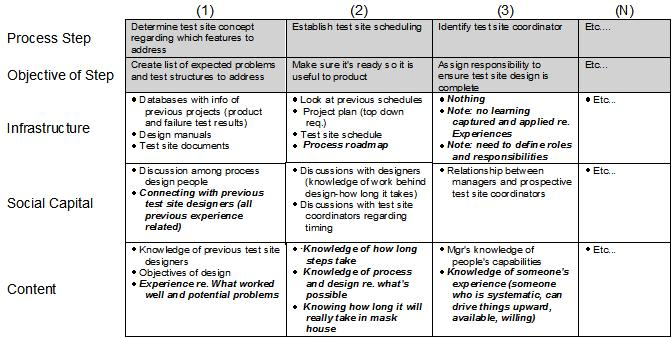

| Guideline: Mapping Processes and Knowledge |
 |
|
1 DescriptionA Knowledge Map describes what knowledge is used in a process, and how it flows around the process. It is the basis for determining knowledge commonality, or areas where similar knowledge is used across multiple processes. It is the first step in defining a high-level corporate taxonomy and common language. If more than one process has been looked at in this stage, we should be able to look at any knowledge commonality between processes, and depending on where these processes occur, between different parts of the organization. This can also be mapped, showing the bigger KM picture. It may be that extending a KM pilot to cover more than one part of the organization may show significantly bigger benefits to keeping it in a single area. Understanding how knowledge is shared around an organization enables organizational learning. Maximum benefits can be obtained by encouraging inter-departmental or inter-process sharing of information and knowledge. We understand which part of the process knowledge and information is created and used. In many cases this may be across processes or departments. 2 PurposeThe purpose of Process Knowledge Mapping is to understand current core processes and the knowledge resources needed to execute them; to identify the “focal points” of initiatives and projects. The output will serve as input to generate a list of potential initiatives or projects, and form the foundation for gap analysis. 3 Steps
Step 1 – Review Critical ProcessesProcesses are identified and agreed upon prior to Process Knowledge Mapping. During a joint session of the IBM and client teams, core processes are reviewed. The purpose of this step is to confirm that the listed processes are uniformly understood, and critical to the client’s success. Step 2 – Identify the individual process steps, and their purpose, within each process.As with the first step, this may have been accomplished during the process definition phase. Each step in the process is identified and recorded. A step is generally defined by its purpose, e.g. make decision about xxx, or collect data on xxx, etc. Considerable time may be spent ensuring that the correct purpose is assigned to each step, as this eventually serves as the basis for aligning specific knowledge items with each process step. Step 3 – Identify the knowledge required to fulfill the purpose of each step.
Now that each step in the process has a unique purpose, the focus shifts to the specific knowledge that is required to
fulfill that purpose. Either the joint IBM/client team can determine the knowledge required by brainstorming, or they
can conduct interviews with the process owners.
Step 4 – Identify the knowledge generated (if any) for each step.To understand where knowledge is gained in the process, brainstorm and identify knowledge that is generated during each process step. This will serve as a portion of the baseline for As-Is analysis, or what knowledge already exists in the organization. Next, identify the focal points for each step in the process. Focal points are process steps/knowledge resources/knowledge generated with a great deal of variability. These, in total, show a picture of the critical knowledge path for each process. Step 5 – Create measurement criteria for each critical process step.It is imperative to determine how we will know that the process has been completed successfully. For the focal points listed previously, or the process as a whole, identify how to measure process performance / effectiveness (brainstorm and capture on flip charts). Step 6 – Analyze the process mapsReview completed process maps; for each process step, review the knowledge resources and determine:
Summarize the analysis:
Document summary on flip charts If analysis is done in sub-groups, each sub-group presents to the full team 4 ExamplesSample: Process Knowledge Map  |
| © Copyright IBM Corp. 1987, 2012 All Rights Reserved Property of IBM These materials are intended only for use as part of an IBM engagement |